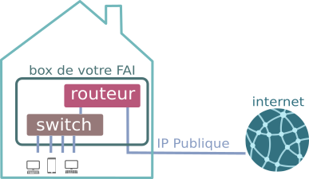

T5.3 Architecture d'un réseau⚓︎
Notion de réseau
- En général, un réseau est un ensemble de nœuds reliés entre eux par des liens.
- Un réseau informatique est un réseau dont les nœuds sont des équipements informatiques reliés par des liens de différente nature: câbles, fibre optique, liaisons satellites, ondes radio, ...).
- Une interface est le point de raccordement entre un lien et un nœud: elle peut être matérielle (carte réseau) ou logicielle.
- Un protocole est un ensemble de règles permettant d'établir, de mener et de terminer une communication entre deux équipements du réseau.
Dans ce cours, nous allons simuler un réseau local avec le logiciel Filius installé sur les VM du lycée.
5.3.1 Un premier réseau⚓︎
Partie 1: Construction d'un réseau
-
Construire le sous-réseau ci-dessous, en cochant «Utiliser l'adresse IP comme nom».

-
Adresse MAC : Chaque ordinateur sur le réseau dispose d'une adresse MAC, qui est une valeur unique attribuée à sa carte réseau (Ethernet, Wifi, 4G, 5G, ...) lors de sa fabrication en usine.
Cette adresse est codée sur 48 bits, présentés sous la forme de 6 octets en hexadécimal, ici
1F:5E:60:F0:15:23.Les trois premiers octets correspondent au code du fabricant. Un site comme https://www.macvendorlookup.com/ vous permet de retrouver le fabricant d'une adresse MAC quelconque.
-
Adresse IP: Une machine possède en général une adresse IP par interface et contrairement à l'adresse MAC, elle peut être modifiée lors du paramétrage du réseau.. Nous utiliserons la version IPv4 (sur 4 octets) bien que cette version est peu à peu remplacée par la version IPv6.
-
-
Passer en mode simulation (triangle vert), puis cliquer sur l'ordinateur
192.168.0.1et installer le logiciel "Ligne de commande". - Réaliser un
pingde la machine192.168.0.1vers la machine192.168.0.3en tapantping 192.168.0.3en ligne de commande.
Rôle du switch
Le rôle d'un switch est de distribuer un message au bon destinataire, en analysant la trame reçue. Lors d'un branchement d'un nouvel ordinateur sur le switch, celui-ci récupère son adresse MAC, ce qui lui permet de trier les messages.

Partie 2: un deuxième réseau
-
Renommer le switch en "SwitchA" et créer un deuxième réseau de trois machines d'adresses IP
192.168.1.1,192.168.1.2et192.168.1.3avec un "SwitchB". -
Tester un
pingde192.168.0.1vers192.168.1.2. -
Renommer la machine
192.168.1.2en192.168.0.16et retenter leping. Que se passe-t-il?
5.3.2 Masque de sous-réseau⚓︎
Lorsqu'une machine A veut envoyer un message à une machine B, elle doit déterminer si cette machine :
- appartient au même sous-réseau : auquel cas le message est envoyé directement via un ou plusieurs switchs.
- n'appartient pas au même sous-réseau : auquel cas le message doit d'abord transiter par un routeur (voir plus loin).
La notion de sous-réseau n'est pas topologique («il suffit de relier les ordinateurs entre eux») mais obéit à des règles numériques.
C'est le masque de sous-réseau (tout simplement "Masque" dans Filius, netmask en anglais) qui permet de déterminer quelles adresses font partie d'un même réseau.
Adresse IP et masque de sous-réseau
Une adresse IP comporte deux parties:
- l'adresse du réseau : les k premiers bits;
- l'adresse de l'hôte : les 32-k derniers bits.
La valeur de k est variable pour chaque réseau, elle acompagne donc généralement les adresses et se nomme masque de sous-réseau.
Un masque de sous-réseau est souvent représenté comme une adresse IPv4 par 4 octets, et est constitué d'une suite de k 1 suivie d'une suite de 0.
-
Le masque par défaut de Filius est
255.255.255.0, qui s'écrit en binaire :11111111.11111111.11111111.00000000. -
La valeur de k est donc 24. On note donc aussi (notation CIDR) l'adresse IP :
192.168.0.1 / 24. -
Dans cette configuration, 256 machines peuvent donc appartenir au même sous-réseau (ce n'est pas tout à fait le cas car des adresses finissant par 0 ou par 255 sont réservées).
-
Deux machines appartiennent au même sous-réseau si elles partagent les 3 premiers nombres (octets) de leur adresse IP, c'est à dire les 24 premiers bits.
-
Une autre valeur de masque peut être
255.255.248.0, qui s'écrit en binaire :11111111.11111111.11111000.00000000. -
La valeur de k est donc 21. On note donc aussi (notation CIDR) l'adresse IP :
192.168.0.1 / 21. -
Deux machines appartiennent au même sous-réseau si elles partagent les 21 premiers bits de leur adresse IP.
-
Combien de machines peuvent appartenir à ce même sous-réseau ?
Appartenance à un même sous-réseau
Pour que deux machines appartiennent à un même sous-réseau, il faut donc qu'elles partagent un même nombre de bits, donnés par le masque de sous-réseau.
L'opération qui permet de le déterminer est le & (et) logique, bit à bit.
Considérons trois machines A, B, C d'IP respectives 192.168.129.10, 192.168.135.200 et 192.168.145.1, configurées avec un masque de sous-réseau égal à 255.255.248.0.
| machine A | machine B | machine C | |
|---|---|---|---|
| IP | 192.168.129.10 | 192.168.135.200 | 192.168.145.1 |
| M | 255.255.248.0 | 255.255.248.0 | 255.255.248.0 |
| IP & M |
5.3.3 Utilisation et rôle du routeur⚓︎
La solution initiale (relier les deux switchs par un cable pour unifier les deux sous-réseaux) n'est pas viable à l'échelle d'un réseau planétaire.
Pour que les machines de deux réseaux différents puissent être connectées, on va utiliser un dispositif équipé de deux cartes réseaux, situé à cheval entre les deux sous-réseaux. Cet équipement de réseau est appelé routeur ou passerelle.
Routage
Les 3 étapes du routage :
- Lorsque qu'une machine A veut envoyer un message à une machine B, elle va tout d'abord vérifier si cette machine appartient à son réseau local. si c'est le cas, le message est envoyé par l'intermédiaire du switch qui relie les deux machines.
- Si la machine B n'est pas trouvée sur le réseau local de la machine A, le message va être acheminé vers le routeur, par l'intermédiaire de son adresse de passerelle (qui est bien une adresse appartenant au sous-réseau de A).
- De là, le routeur va regarder si la machine B appartient au deuxième sous-réseau auquel il est connecté. Si c'est le cas, le message est distribué, sinon, le routeur va donner le message à un autre routeur auquel il est connecté et va le charger de distribuer ce message : c'est le procédé (complexe) de routage, qui sera vu en classe de Terminale.
Dans l'exemple suivant, où le masque est 255.255.255.0, l'adresse 172.16.52.3 n'est pas dans le sous-réseau de 192.168.0.1. Le message va donc transiter par le routeur.

Partie 3: Ajout d'un routeur
Si vous n'avez pas sauvegardé votre réseau, téléchargez ce fichier .
- Ajouter un routeur entre le SwitchA et le SwitchB.
- Configurer le routeur :
- L'interface reliée au Switch A doit avoir une adresse du sous-réseau A (idem pour le réseau B). On donne souvent une adresse finissant par
254, qui est en quelque sorte la dernière adresse du réseau (en effet l'adresse en255est appelée adresse de broadcast, utilisée pour «pinger» en une seule fois l'intégralité d'un sous-réseau). - Dans l'onglet général, sélectionner « Routage automatique ».
- Ainsi configuré notre routeur peut jouer le rôle de passerelle entre les deux sous-réseaux.
- L'interface reliée au Switch A doit avoir une adresse du sous-réseau A (idem pour le réseau B). On donne souvent une adresse finissant par
-
Tester un ping entre
192.168.0.1et192.168.1.2¿Que pasa?
Cela ne marche pas. La carte réseau refuse d'envoyer les paquets car elle ne sait pas où les envoyer. Il faut donc dire à chaque machine qu'une passerelle est maintenant disponible pour pouvoir sortir de son propre sous-réseau. Il faut donc aller sur la machine
192.168.0.1et lui donner l'adresse de sa passerelle... -
Une fois les passerelles renseignées, effectuer un traceroute entre
192.168.0.1et192.168.1.2: on y voit le nombre de sauts nécessaires entre les deux machines.
Cas d'un réseau domestique
Chez vous, la box de votre opérateur joue simultanément le rôle de switch et de routeur :
- switch car elle répartit la connexion entre les différents dispositifs (ordinateurs branchés en ethernet, smartphone en wifi, tv connectée...)
- routeur car elle fait le lien entre ce sous-réseau domestique (les appareils de votre maison) et le réseau internet.

Essayez chez vous de récupérer l'adresse IP locale, le masque de sous-réseau ainsi que la passerelle par défaut, à l'aide d'une commande ipconfig sous Windows.
5.3.4 Serveur DNS⚓︎
Lors d'une utilisation classique d'un navigateur web, c'est une url mémorisable qui s'affiche, et non une adresse IP : on retient en effet plus facilement https://www.google.com/ que http://216.58.213.131, qui renvoient pourtant à la même adresse.
La machine qui assure ce rôle d'annuaire entre les serveurs web et leur adresse IP s'appelle un serveur DNS. Pour pouvoir indexer la totalité des sites internet, son rôle est structuré de manière hiérarchique. Vous trouverez des détails ici.
Partie 4: Ajout d'un serveur DNS

- Connecter un ordinateur au SwitchB, sur l'adresse
192.168.1.30, installer dessus un Serveur web et le démarrer. - Sur la machine
192.168.0.1, installer un Navigateur Web. En tapant dans la barre d'adresse l'adresse IP du Serveur web, la page d'accueil de Filius s'affiche. - Rajouter un serveur DNS, qui n'aura dans son annuaire d'un seul site. Il faut pour cela raccorder une nouvelle machine (mais une machine déjà sur le réseau aurait très bien pu jouer ce rôle), et installer dessus un serveur DNS.
- Sur ce serveur DNS, associer le nom de domaine
www.vivelansi.frà l'adresse IP192.168.1.30. - De retour sur la machine
192.168.0.1, spécifier maintenant l'adresse du serveur DNS. - Depuis le navigateur web de la machine
192.168.0.1, le sitehttp://www.vivelansi.frdoit maintenant être accessible.
5.3.5 Exercices⚓︎
Exercice 1
On souhaite pouvoir raccorder 1000 machines sur le même réseau IP. Donner le plus petit masque permettant de définir un tel sous-réseau. Même question avec 3000 machines.
Noter à chaque fois le masque en notation décimale pointée, puis CIDR.
Exercice 2
On considère le masque 255.255.252.0. Parmi les adresses suivantes, indiquer lesquelles appartiennent au même sous-réseau:
129.175.127.1129.175.130.10129.175.128.17129.175.131.110129.175.132.8
Penser à utiliser la fonction bin de Python pour effectuer les conversions (même s'il faut savoir les faire «à la main», et vérifier vos «et» logiques avec l'opérateur & de Python:
>>> 127 & 252
124